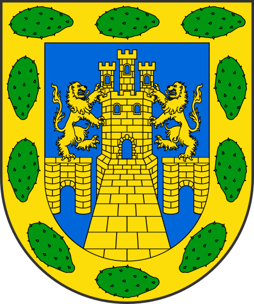

CIUDAD DE MEXICO
La Ciudad de México (CDMX), también conocida como CDMX o simplemente México, es una de las ciudades más vibrantes, dinámicas y culturalmente ricas del mundo. Capital del país y una de las urbes más grandes y pobladas del planeta, esta metrópoli se caracteriza por su increíble mezcla de historia, modernidad, arte, gastronomía y diversidad.La CDMX es conocida por su vasta oferta cultural, que incluye museos de clase mundial, como el Museo Nacional de Antropología, teatros, galerías de arte y un sinfín de festivales que celebran tanto el pasado como el presente. La gastronomía es otro de sus grandes atractivos, con una oferta que abarca desde los tradicionales tacos y tamales en los mercados locales, hasta experiencias culinarias sofisticadas que han ganado fama internacional.